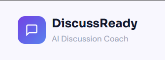
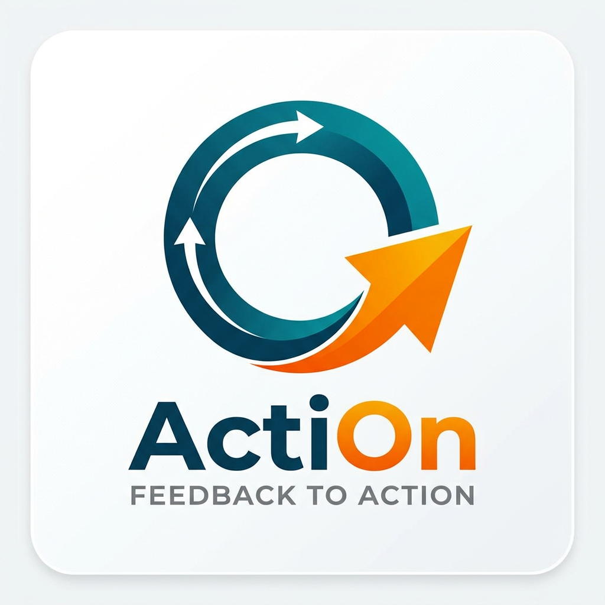
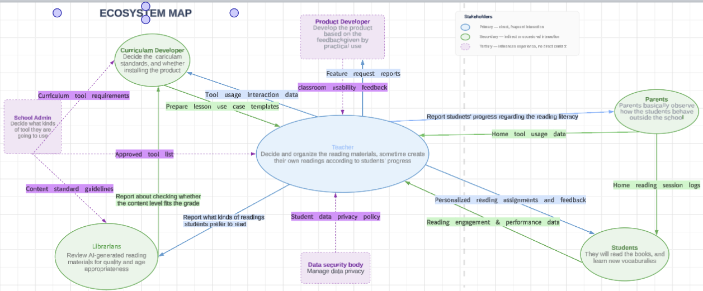

Featured
Featured
Supporting Teacher Learning with LLM-Simulated Dialogues
Explored how LLM-generated student dialogues help teachers identify science misconceptions and improve responsive teaching strategies.
View Full Report →Explore my projects and the impact they've made
Featured
Explored how LLM-generated student dialogues help teachers identify science misconceptions and improve responsive teaching strategies.
View Full Report →
FeaturedA structured tool grounded in ICAP theory that guides students through four self-explanation stages to deepen cognitive engagement before discussions.
View Project →
Used Wonda Spaces and 3D AI avatars to help Japanese middle schoolers practice English conversation in a low-pressure virtual environment.
View Project →
An adaptive module that helps students turn instructor feedback into actionable improvement strategies using structured reflection and scaffolding.
View Project →
An adaptive design helping high schoolers correct climate change misconceptions through peer discussion and targeted LLM feedback.
View Full Report →
Evaluated Kreebo through user testing, a WCAG 2.2 accessibility audit, and ecosystem mapping to identify friction points and recommend design improvements.
View Project →